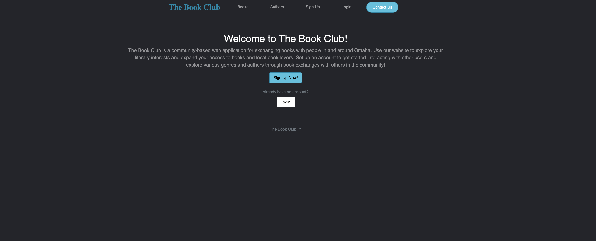
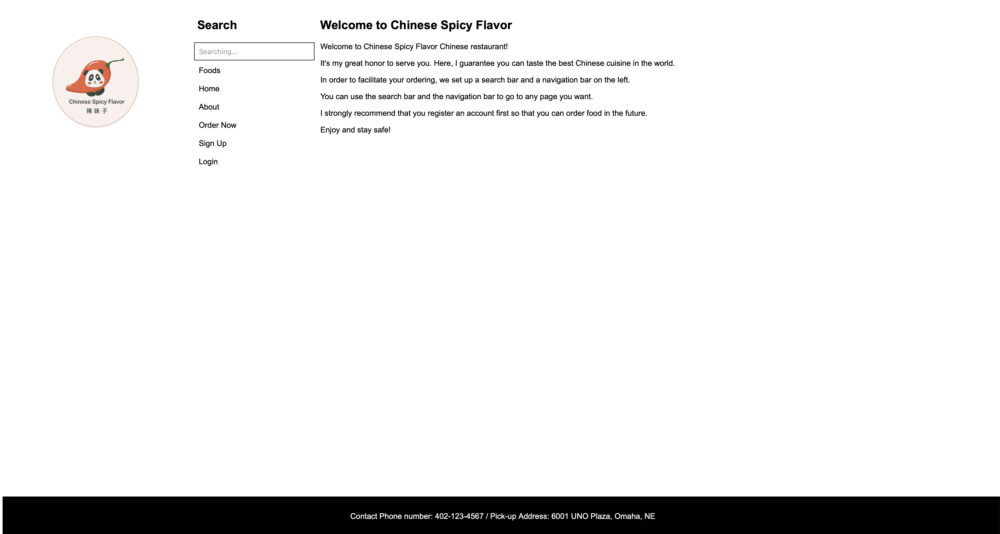
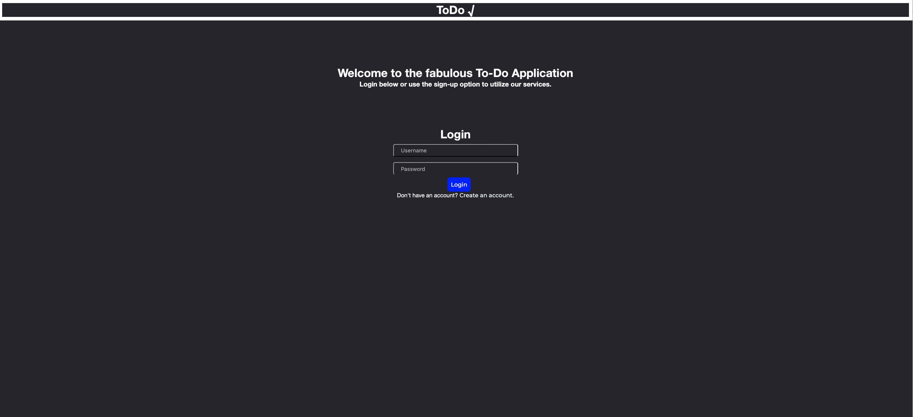

{% block navigation %}
{% endblock %}
{% block mainbody %}
About Me
Hello my name is Juan Lizarraga, and i'm a current web developer. I am a recent graduate from the University of Nebraska Omaha, with a bachelors degree in Computer Science. My emphasis through my undergraduate career was, how I could gain the intuition in order to develop better web applications. Currently I utilize the Django web framework in order to build my current applications. One of the things that I'm the most proud of is simply the growth that I have seen in myself, when it comes to developing the web applications.
My Projects
Below are the projects, that I consider to be my best work. Each link is clickable and all websites are currently active. page.

The Apple Nail Salon & Spa is a project that was developed for my Senior
Capstone course project. In this project me and my team developed a hybrid scheduling system in
order
to allow customers to book appointments and allows for management to manage walk in
guests.

This was a student led project in which we developed a social networking
site for local book users, known as "The Book Club". The idea was to enhance a sense of
community among local book users. Here
registered users may add books to their collection and also engage with other users via
messaging,
if they are interested in performing a book exchange with another user.

This was a solo project of mine, in a web applications development
course
during my undergraduate tenure. This was my first full fledged "web application", and the
outcome was an
online ordering system for a chinese restaurant. Where both registered and non-registered users
can place
orders.

This was another self-project of mine which was done as a self
project for my Intro To Software Engineering course, the emphasis of this project to get
more comftorable working with Django's SQLite database as well as the vue.js
front-end framework, in order to build a full-fledged ToDo application.